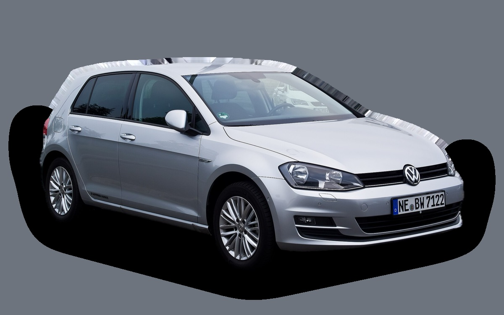

Vad kostar en Volkswagen Golf 7 per månad?
En Volkswagen Golf 7 från 2016 kostar cirka 3 083 kr i månaden, allt inräknat.
3 083 krper månad, årsmodell 2016
96 600 krpris, årsmodell 2016
221 900 krsenaste nypris
Cprisvärdhetsbetyg (2016)

_–_Frontansicht,_15._Juni_2014,_Düsseldorf.jpg){kind=link}
Månadskostnad per årsmodell
| Årsmodell | Version i beräkningen | Pris | Per månad | Betyg |
|---|---|---|---|---|
| 2019 | 1.4 TSI 125, Style | 137 000 kr | 3 336 kr | C |
| 2016 | 1.4 TSI 125, Style | 96 600 kr | 3 083 kr | C |
| 2013 | 1.4 TSI 125, Style | 65 000 kr | 2 837 kr | C |
Räknat på 5 års ägande och 1 250 mil per år, med bränslepriser från 2026-10-22. Månadskostnaden innehåller värdeminskning, drivmedel, service och reparationer, försäkring och fordonsskatt.
Så fördelas kostnaden för en 2016:a
- Värdeminskning: 781 kr/mån
- Drivmedel: 1 307 kr/mån
- Service och reparationer: 756 kr/mån
- Försäkring: 191 kr/mån
- Fordonsskatt: 48 kr/mån
Begagnatpriser i annonser
| Årsmodell | Medianpris | Annonser | Typiskt miltal |
|---|---|---|---|
| 2019 | 159 900 kr | 97 | 10 500 mil |
| 2018 | 149 400 kr | 143 | 12 000 mil |
| 2017 | 129 900 kr | 139 | 13 500 mil |
| 2016 | 107 400 kr | 166 | 15 100 mil |
| 2015 | 94 900 kr | 153 | 17 600 mil |
| 2014 | 78 000 kr | 153 | 18 700 mil |
| 2013 | 79 900 kr | 90 | 19 200 mil |
Medianpriset i svenska annonser per årsmodell i oktober 2026 (källa: Blocket). Annonspriser är utgångspriser, och slutpriset kan bli lägre.
Motorer och versioner
| Motor | Drivmedel | Effekt | 0–100 km/h | Förbrukning (WLTP) | Räckvidd | Årsmodeller | Pristillägg |
|---|---|---|---|---|---|---|---|
| 1.4 TSI 125 | Bensin | 125 hk | 9,1 s | 5,2 l/100 km | – | 2013–2019 | – |
| GTE laddhybrid 204 | Laddhybrid | 204 hk | 7,6 s | 2 l/100 km + 13 kWh/100 km | – | 2013–2019 | +183 000 kr |
| GTI 245 | Bensin | 245 hk | 6,2 s | 6,4 l/100 km | – | 2013–2019 | +98 000 kr |
- Utrustning: Style, GT (+17 000 kr)
Fakta
- Kaross
- Halvkombi
- Årsmodeller
- 2013–2019
- Senaste nypris
- 221 900 kr
- Bagage
- 380 liter
- Euro NCAP
- 5 av 5 stjärnor
- Nybilsgaranti
- 3 år
- Driftsäkerhet
- 4 av 5
- Helförsäkring, uppskattning
- 5 200 kr/år
- Service, uppskattning
- 3 700 kr/år
Vanliga fel att ha koll på
- DSG-låda DQ200 (mekatronik, koppling), reparation cirka 20 000 kr
- Vattenpump och termostathus i plast läcker, reparation cirka 6 500 kr
- EGR och partikelfilter (TDI), reparation cirka 9 000 kr
- Haldex-pump (fyrhjulsdrift), reparation cirka 7 000 kr
- DSG-låda (mekatronik), reparation cirka 18 000 kr
Felen gäller vissa motorer och årsmodeller. I kalkylatorn räknas risken för just den version du väljer.
Fördelar och nackdelar
Fördel
En av Sveriges vanligaste begagnade bilar, välbyggd och lätt att sälja vidare.
Nackdel
Tillverkas inte längre.
Liknande bilar
 Volkswagen ID.33 098 kr/mån som 2023:a
Volkswagen ID.33 098 kr/mån som 2023:a Peugeot 2083 052 kr/mån som 2023:a
Peugeot 2083 052 kr/mån som 2023:a Suzuki Swift3 039 kr/mån som 2026:a
Suzuki Swift3 039 kr/mån som 2026:a Volvo C303 132 kr/mån som 2010:a
Volvo C303 132 kr/mån som 2010:a Honda Jazz3 132 kr/mån som 2023:a
Honda Jazz3 132 kr/mån som 2023:a Toyota Corolla3 141 kr/mån som 2023:a
Toyota Corolla3 141 kr/mån som 2023:a
Uppdaterad 2026-10-29 · annonsdata okt 2026